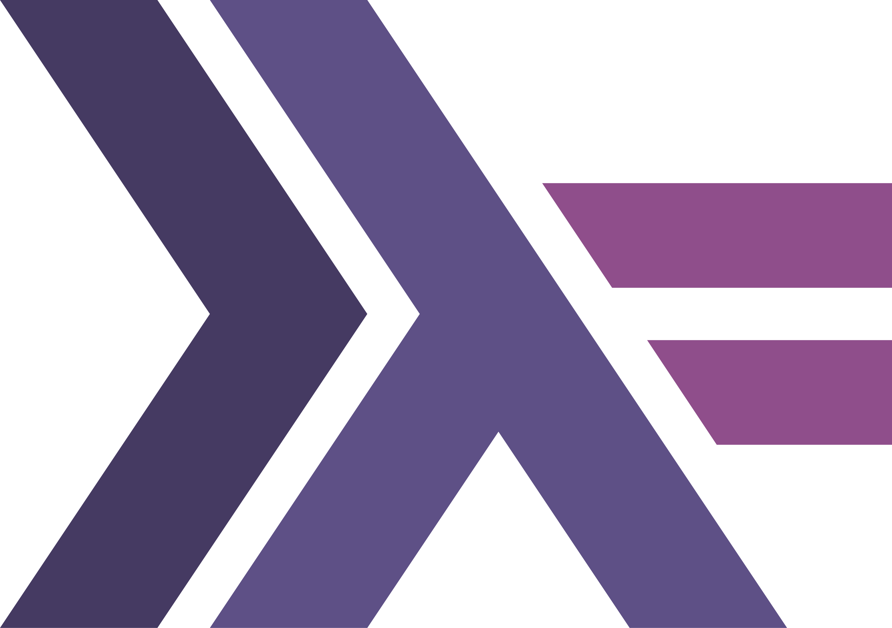

Compétences
Langages
 Python
Python Java
Java JavaScript
JavaScriptPHP
 C
C SQL
SQL
Haskell Dart
DartFront-end
 HTML5
HTML5CSS3
React.js
Flutter
Back-end
Node.js
PHP
 MySQL
MySQL PostgreSQL
PostgreSQLSystèmes d’exploitation
Linux
Mac OS
Outils
 GitHub
GitHub GitLab
GitLabVS Code
Sécurité
SHA-256
AES
RBAC
Audit Logging
Sessions